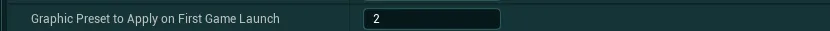
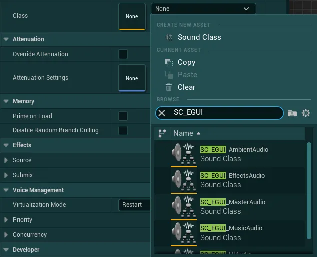
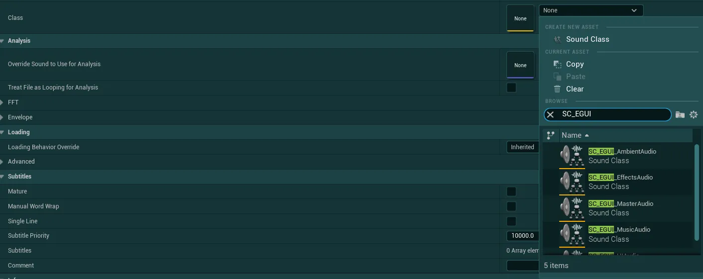
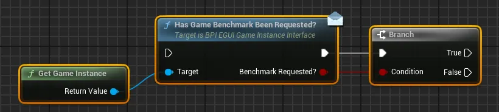
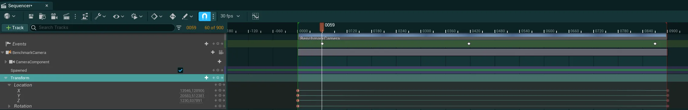
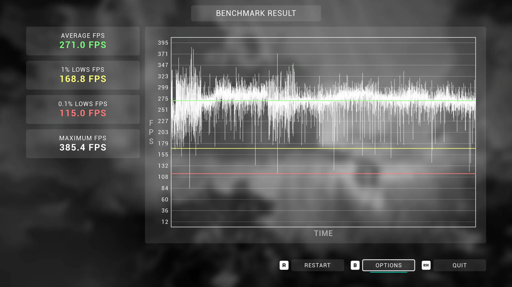

选项菜单¶
选项菜单系统可从提供的主菜单或暂停菜单中进入。部分设置以及选项菜单的一部分功能可能需要额外配置才能在项目中完全可用并完成集成，你可以在以下指南中找到所有必要的细节：
请查看设置系统用法章节，了解有关如何添加或删除新设置，以及在选项菜单以外的任何系统中使用设置的更多细节。
按键绑定设置配置¶
简介说明
本资源提供的按键重绑定系统使用 Unreal Engine 的增强输入系统（Enhanced Input System）。如果你仍在使用已弃用的旧输入系统，需要先将输入转换到这套新系统。你可以查看 Unreal 的文档，了解如何开始使用增强输入
增强输入配置的示例位于 EasyGameUI/DemoContent/Inputs 文件夹中，其中的输入在 BP_EGUI_DemoMainCharacter 中使用
-
要开始配置按键绑定，你首先需要配置系统会考虑哪些输入映射上下文（Input Mapping Context），以及应如何处理分组与冲突。
为此，请打开你的全局配置数据资源（Global Config Data Asset），然后在选项菜单（Options Menu）部分可以找到以下相关设置：
Keybinding Mapping Contexts该变量定义了所有输入映射上下文的列表，这些上下文包含可重新绑定的输入，并且你希望它们在按键重绑定系统中使用。如果按映射上下文分组，与每个上下文关联的文本将用作类别名称-
Keybinding Mappings Grouping Type该变量定义了在菜单中显示按键绑定时采用的分组方式Group by Mapping Context将所有按键绑定归到由输入映射上下文定义的类别下Group by Input Category按每个按键自身的Display Category对所有按键绑定进行分组，与映射上下文无关
-
Keybinding Mappings Conflict Method该变量定义了系统应如何处理按键绑定冲突Conflicts by Input Mapping Context只有同一输入映射上下文内的按键才会冲突（与显示类别无关）Conflicts by Category只有同一显示类别内的按键才会冲突（与输入映射上下文无关）——请注意，根据你的输入配置，这可能会在 IMC 内产生非预期的行为，如果合适，可以考虑使用“Conflicts All”Conflicts All所有按键都会被纳入冲突检测（与类别或 IMC 无关），这意味着所有可用的按键映射之间都不允许出现任何冲突
-
配置完成后，打开你希望设置用于重新绑定的输入映射上下文
-
然后，对于你希望出现在按键绑定设置中的每个按键（即使它对玩家是锁定的），按下方描述的以下参数进行配置

Setting Behavior如果该按键需要在设置中可见，应设为Override Settings；如果应完全隐藏，则设为Ignore SettingsPlayer Mappable Key Settings只需在该变量的下拉菜单中选择Player Mappable Key Settings-
Name必须是用于描述该按键的完全唯一名称。名称本身并不重要，但必须唯一按键绑定修饰符
系统支持多种“修饰符”，可以添加到任意按键上以改变其行为。要添加修饰符，只需在你的唯一名称末尾加上
_ModifierName，可用的修饰符如下：_Secondary带有该修饰符的按键会显示在次要槽位中（仅支持鼠标/键盘按键），它可以与同一映射中的主要按键绑定一同显示_Locked带有该修饰符的按键会在 UI 中显示，但玩家无法手动重新绑定它_AllowConflicts带有该修饰符的按键会忽略所有冲突，这意味着其他任何按键绑定都允许使用与该按键相同的键_Hold带有该修饰符的按键会显示为“Hold”键，这不会改变按键重绑定的工作方式，只会改变按键的视觉显示
你可以组合任意修饰符，例如：
MoveForward_Hold_Locked或MoveForward_AllowConflicts_Secondary等等。 -
Display Name你希望在 UI 中显示的名称，此名称可以与其他按键复用相同文本，最多 3 个按键可以共享同一个 Display Name（2 个鼠标/键盘按键和 1 个手柄按键），这种情况下它们会在同一个按键绑定设置中一起显示 Display Category如果你在全局配置中选择按按键类别排序，这将是该按键显示时所属的类别- 然后你可以忽略任何我没有提到的设置

图形设置配置¶
开箱即用，系统提供了一整套图形设置，无需任何额外配置即可工作。以下说明仅为建议，应用后可以改进你的项目中的系统。
改进的图形可扩展性设置
Unreal Engine 有一套默认的可扩展性规则来定义所有图形设置（阴影、光照、纹理等），但这些规则往往过于极端，尤其是在较低设置下（例如在 Low 下完全禁用阴影）。
为改善这一点，你可以使用以下可扩展性设置，即使在低/中图形设置下也能提供更“合理”的配置。
要使用它，只需打开文件资源管理器，进入项目的 Config 文件夹并创建一个 DefaultScalability.ini 文件。
然后，复制以下文本并粘贴到创建好的文件中：
;-----------------------------------------------------------------------------------------------------------------
[ViewDistanceQuality@0]
r.ViewDistanceScale=0.5
[ViewDistanceQuality@1]
r.ViewDistanceScale=0.65
;-----------------------------------------------------------------------------------------------------------------
[PostProcessQuality@0]
-r.MotionBlurQuality=0
r.MotionBlur.HalfResGather=1
r.AmbientOcclusionMaxQuality=40
r.DepthOfFieldQuality=1
r.Tonemapper.Quality=2
r.DOF.Gather.ResolutionDivisor=2 ; lower gathering resolution
r.DOF.Gather.AccumulatorQuality=0; lower gathering accumulator quality
r.DOF.Gather.PostfilterMethod=2 ; Max3x3 postfilering method
r.DOF.Gather.EnableBokehSettings=0 ; no bokeh simulation when gathering
r.DOF.Gather.RingCount=3 ; low number of samples when gathering
r.DOF.Scatter.ForegroundCompositing=0; no foreground scattering
r.DOF.Scatter.BackgroundCompositing=0; no foreground scattering
r.DOF.Recombine.Quality=0; no slight out of focus
r.DOF.TemporalAAQuality=0; faster temporal accumulation
r.DOF.Kernel.MaxForegroundRadius=0.005 ; required because low gathering and no scattering and not looking great at 1080p
r.DOF.Kernel.MaxBackgroundRadius=0.005 ; required because low gathering and no scattering and not looking great at 1080p
[PostProcessQuality@1]
-r.MotionBlurQuality=3
r.MotionBlur.HalfResGather=1
r.LensFlareQuality=1
r.FastBlurThreshold=3
r.Tonemapper.Quality=4
[PostProcessQuality@2]
-r.MotionBlurQuality=3
r.MotionBlur.HalfResGather=0
r.FastBlurThreshold=7
[PostProcessQuality@3]
-r.MotionBlurQuality=4
r.MotionBlur.HalfResGather=0
;-----------------------------------------------------------------------------------------------------------------
[AntiAliasingQuality@0]
r.FXAA.Quality=1
r.TemporalAA.Quality=1
r.TSR.RejectionAntiAliasingQuality=1
[AntiAliasingQuality@1]
r.FXAA.Quality=2
;-----------------------------------------------------------------------------------------------------------------
[ShadowQuality@0]
r.LightFunctionQuality=1
r.ShadowQuality=2
r.Shadow.CSM.MaxCascades=2
r.Shadow.MaxCSMResolution=1024
r.Shadow.DistanceScale=0.65
-r.VolumetricFog=0
r.LightMaxDrawDistanceScale=0.25
r.CapsuleShadows=1
r.Shadow.Virtual.SMRT.RayCountDirectional=2
r.Shadow.Virtual.SMRT.RayCountLocal=2
[ShadowQuality@1]
r.Shadow.CSM.MaxCascades=2
r.Shadow.DistanceScale=0.75
r.Shadow.CSM.TransitionScale=0.3
-r.VolumetricFog=0
r.Shadow.Virtual.MaxPhysicalPages=1024
[ShadowQuality@2]
r.ShadowQuality=4
r.Shadow.DistanceScale=0.9
-r.VolumetricFog=1
-r.VolumetricFog.GridPixelSize=16
-r.VolumetricFog.GridSizeZ=64
-r.VolumetricFog.HistoryMissSupersampleCount=4
[ShadowQuality@3]
-r.VolumetricFog=1
-r.VolumetricFog.GridPixelSize=8
-r.VolumetricFog.GridSizeZ=128
-r.VolumetricFog.HistoryMissSupersampleCount=4
;-----------------------------------------------------------------------------------------------------------------
[GlobalIlluminationQuality@0]
r.DistanceFieldAO=1
r.AOQuality=1
r.SSGI.Quality=1
[GlobalIlluminationQuality@1]
r.SSGI.Quality=2
[GlobalIlluminationQuality@2]
r.SSGI.Quality=3
[GlobalIlluminationQuality@3]
r.SSGI.Quality=4
;-----------------------------------------------------------------------------------------------------------------
[ReflectionQuality@0]
r.SSR.Quality=2
[ReflectionQuality@3]
r.Lumen.TranslucencyReflections.FrontLayer.Enable=1
;-----------------------------------------------------------------------------------------------------------------
[TextureQuality@0]
r.Streaming.MipBias=2
r.Streaming.MaxNumTexturesToStreamPerFrame=2
r.Streaming.Boost=0.5
r.MaxAnisotropy=2
r.Streaming.PoolSize=500
[TextureQuality@1]
r.Streaming.PoolSize=750
[TextureQuality@2]
r.Streaming.PoolSize=1000
[TextureQuality@3]
r.Streaming.PoolSize=1500
;-----------------------------------------------------------------------------------------------------------------
[EffectsQuality@0]
r.SSS.Scale=0.5
-r.SSGI.Quality=0
r.EmitterSpawnRateScale=0.15
[EffectsQuality@1]
-r.SSGI.Quality=1
r.EmitterSpawnRateScale=0.3
[EffectsQuality@2]
r.DetailMode=2
-r.SSGI.Quality=2
r.EmitterSpawnRateScale=0.6
[EffectsQuality@3]
r.MaterialQualityLevel=3 ; High quality
-r.SSGI.Quality=3
;-----------------------------------------------------------------------------------------------------------------
[FoliageQuality@0]
foliage.DensityScale=0.3
grass.DensityScale=0.3
[FoliageQuality@1]
foliage.DensityScale=0.6
grass.DensityScale=0.6
;-----------------------------------------------------------------------------------------------------------------
你可以根据自己游戏的具体需求随意调整这些可扩展性设置，作为参考，你可以在以下文件中找到引擎默认的可扩展性设置：
[UE Install Folder]\Engine\Config\BaseScalability.ini
在首次启动游戏时应用图形预设
大多数情况下，Unreal Engine 在首次启动游戏时通常会默认使用 Epic/Ultra 图形预设，这在配置较低的硬件上可能带来较差的体验。
为帮助解决这个问题，系统在全局配置中提供了一个内置参数，你可以调整它在首次启动时应用你选择的特定预设。 

玩法设置配置¶
开箱即用，选项菜单提供了若干玩法选项，其中一些会根据你的项目配置自动生效，另一些则需要按本节所述进行简单的额外配置

语言
语言设置会与 Unreal Engine 提供的内置本地化仪表板工具自动配合工作，在该工具中配置的任何语言都会显示在选项菜单中供用户选择，无需任何额外配置。
手柄图标
手柄图标设置允许用户选择输入图标应使用哪个手柄品牌，此设置无需任何配置，开箱即用。
如果你希望更改应用于游戏的默认手柄品牌，可以在全局样式数据资源（Global Styling Data Asset）中通过 Default Gamepad Keys Brand 设置进行修改
相机视野
视野设置应无需额外配置即可自动生效，但在某些情况下，它可能会将 FOV 应用到错误的游戏相机上。
如果你遇到此问题，请打开 EasyGameUI/EasyOptionsMenu/Core/SettingManagers/GameplaySettings 中的蓝图 BP_SettingCameraFOV
然后在 Apply Setting Value 函数中，将红色注释内的逻辑替换为你自己的逻辑，以从角色上获取正确的游戏相机

灵敏度与相机反转
鼠标和手柄相机的玩法选项使用增强输入修饰符（Enhanced Input Modifiers）应用到你的输入映射上下文，并按所请求的灵敏度和相机反转设置修改输入。你可以在 IMC_EGUI_DemoInputs（EasyGameUI/DemoContent/Inputs）中看到此配置的示例
- 要应用这些设置，只需打开包含相机输入的输入映射上下文
-
然后，在你的“Look”输入中，添加对应的
Modifiers：鼠标输入添加Mouse Sensitivity，并根据你设置的鼠标轴添加Invert XAxis或Invert YAxis。如果你使用的是单个
Mouse XY 2D-Axis，那么只需为该输入添加 Mouse Sensitivity 修改器，以及Invert XAxis和Invert YAxis两个修改器即可
-
对手柄输入重复上述操作，但使用
Gamepad Sensitivity而非 Mouse Sensitivity。Invert XAxis和Invert YAxis的说明同样适用
音频设置配置¶
要设置项目中的音频设置，你可以使用资源包提供的音频类，也可以在系统中实现自己的类
使用提供的音频声音类
-
进入项目设置（Project Settings）

-
在“Engine”下，搜索
Audio类别
-
现在为
Default Sound Class、Media Sound Class、Default Base Sound Mix填入提供的对应声音类，值如下：前两项填入
SC_EGUI_MasterAudio，声音混合项填入SCM_EGUI_MasterMix，如下图所示 -
然后，打开你的 Global Config Data Asset，找到
Game Audio Classes设置，填入对应的值（Master中为SC_EGUI_MasterAudio，等等。你也可以在 Demo Config Data Asset 中找到此配置） -
接着，你需要为你项目中使用的每个 Sound Wave／Sound Cue 资源配置正确的音频类别。
为此，在 Sound Wave 或 Sound Cue 资源中，找到 Sound Category 下的Class，并选择提供的某个声音类：SC_EGUI_EffectsAudio/SC_EGUI_MusicAudio/SC_EGUI_UIAudio/SC_EGUI_AmbientAudio在 Sound Cue 资源中

在 Sound Wave 资源中



使用你自己的声音类
- 要使用你自己的音频类，只需打开你的 Global Config Data Asset，找到
Game Audio Classes设置 -
找到后，用你系统中对应的音频类填充每个类别，下面是使用演示声音类的示例，这些类也可以在 Demo Config Data Asset 中看到
-
音频类现在将由选项菜单中对应名称的设置控制。如果你想添加新的类，请查看下一节

添加新的声音类/音频设置
如果你想在系统中注册新的声音类，无论是已有的自定义类，还是与资源包提供的类并存的新类，都可以按以下步骤操作：
-
如果你使用的是提供的 master 声音类（
EasyGameUI/Core/Audio/SC_EGUI_MasterAudio），请打开它，然后从“Children”拖出一根连线到图表中的空白处，输入这个新类的名称并按回车。这样会在 master 所在的同一文件夹中自动生成一个新的声音类。
-
然后，打开位于
EasyGameUI/EasyOptionsMenu/Datas/文件夹中的枚举E_AudioClasses -
使用
Add Enumerator按钮添加一个新的项，然后在新生成的字段中为它命名
-
接着，进入
EasyGameUI/EasyOptionsMenu/Core/SettingsManagers/AudioSettings文件夹，复制其中的任意蓝图，例如BP_SettingAudio_Master（右键 > 复制，或按 Ctrl + D） -
为这个新蓝图取一个你喜欢的名称并打开它，你会在 Details 面板中看到以下参数
Audio Class首先在此变量的下拉菜单中选择你创建的音频枚举值Setting Data然后按你的喜好配置该设置（显示名称、描述、数值等）。这些内容将由 UI 中的设置控件使用
-
然后，我们只需在
WBP_EasyOptionsMenuMain（EasyOptionsMenu/Core/）中为此设置添加一个控件 -
在控件的 Hierarchy 中，搜索任一
Audio Setting（例如我将用作示例的Ambient Audio Setting），然后复制它（Ctrl+D）
-
为该控件取一个合适的名称，然后在
Easy Config类别下的Setting Manager变量中选择你刚创建的蓝图。你不需要更改其他任何内容，该设置应该已经正确配置
-
最后，我们只需在 Global Config 中引用新的音频类和设置，以便系统正确注册。
-
打开你的 Global Config data asset，在
Game Audio Classes变量中，使用+按钮添加一个新条目。然后在新条目的下拉菜单中，选择你之前添加的枚举值，并选择关联的音频类
-
最后，找到
Settings List变量，将新创建的BP_SettingAudio蓝图类添加到其中 -
现在编译并保存所有已编辑的蓝图，就完成了！


外部超分辨率设置（DLSS、FSR、XeSS）¶
要设置外部超分辨率方案，你首先需要下载每个插件并将其导入你的项目
以下是我针对指定版本资源包测试并验证的最低版本。更旧的版本可能可用，但我建议始终为每个插件使用最新版本。
| 资源包版本 | Nvidia DLSS | AMD FSR | Intel XeSS |
|---|---|---|---|
| 3.0 | 8.1.0 | 4.0.3a | 3.0.1 |
插件可用性
所有插件未必始终支持每个 Unreal Engine 版本，如果某个插件不可用，请过几周再回来查看它是否已更新，我无法控制这些第三方插件的发布。
如果并非所有插件都可用，系统提供了一种仅启用特定插件的方式，如下面的说明所示。
插件安装¶
以下说明将帮助你为项目安装各个插件，你可以安装自己选择的插件，因为之后你可以只激活特定插件供系统使用。
Nvidia DLSS 安装
- 下载链接：https://developer.nvidia.com/rtx/dlss/get-started
-
向下滚动到
DLSS in Unreal Engine 5部分，下载与你的 Unreal Engine 版本对应的版本。
-
解压你下载的 .zip 文件
-
在解压出的文件中，找到
Plugins文件夹
-
在
Plugins文件夹内，复制DLSS和StreamlineNGXCommon文件夹
-
然后，转到你的项目文件夹，将复制的文件夹粘贴到
Plugins文件夹中（如果不存在则创建一个）

AMD FSR 安装
- 下载链接：https://gpuopen.com/learn/ue-fsr/
-
点击下载按钮，即可开始下载所有可用的 Unreal 版本
-
解压你下载的 .zip 文件
-
在解压出的文件中，找到与你的引擎版本相匹配的文件夹（530 = 5.3 / 540 = 5.4，以此类推）
-
在你的版本文件夹内，复制
FSR文件夹（仅此文件夹） -
然后，进入你的项目文件夹，把 FSR3 文件夹粘贴到
Plugins文件夹中（如果该文件夹不存在，就新建一个）


Intel XeSS 安装
- 下载链接：https://github.com/GameTechDev/XeSSUnrealPlugin/releases
-
在最新版本中，点击与你的 Unreal Engine 版本相匹配的版本的下载链接
-
解压你下载的 .zip 文件
-
把所有解压出的内容放入同一个文件夹，并复制这个新文件夹

-
然后，进入你的项目文件夹，把新建的文件夹粘贴到
Plugins文件夹中（如果该文件夹不存在，就新建一个）

项目设置¶
- 首先，如果你在安装插件之前没有关闭 Unreal 项目，请重新启动它
-
然后，如果你安装了 AMD FSR 插件，请转到
Edit>Project Settings，输入Frame Generation，并确保Frame Generation Enabled设置未被勾选（false）
-
接着，转到
EasyGameUI/Core/Utilities文件夹，打开BPFL_EGUI_EasyFunctionUtilities蓝图，并打开Get Supported Upscaling Methods函数 -
在此函数中，只连接已安装插件对应的节点
例如，如果你只安装了 DLSS，就只连接Enable DLSS Support节点，其他节点保持未连接FSR 版本选择
如果你使用的是较旧版本的 FSR 插件（3.X、4.0.0），可以在
FSR Plugin Version变量中选择已安装的版本。这是必需的，因为 AMD 在插件代码中做了改动，若不显式选择，这些版本之间便无法互相兼容。如果你刚刚下载的是最新版本，保持默认值
FSR 4 Redstone即可。 -
编译、保存，就完成了！


升采样（Upscaling）附加指南¶
测试注意事项
-
要正确测试各种升采样效果，你需要在 Standalone Game 模式 / Quick Launch 模式 / 打包版本中进行游戏。在 Play In Editor（PIE）中测试无法体现正常的功能表现


-
如果 3 个选项都没有出现在菜单中，可能是因为你的硬件不兼容。Nvidia DLSS 仅在 Nvidia RTX 显卡上有效。Intel XeSS 和 AMD FSR 应能在大多数现代显卡上正常工作
- 大部分功能基本可以直接开箱即用，但若要获得最佳的实现效果，或者你发现任何异常/不一致的行为，请参考各插件的文档
修复可能出现的打包编译错误
此问题最有可能在 UE 5.6+ 中搭配 FSR 插件时出现
如果你在打包过程中遇到与任何升采样插件相关的编译错误（阻塞性错误，而非警告），请尝试将插件安装到引擎文件夹中：
- 首先，找到你所使用的 Unreal Engine 版本的安装位置
-
然后，转到
Engine/Plugins/Marketplace文件夹。如果你的 Plugins 文件夹中没有该文件夹，只需新建一个文件夹并将其命名为Marketplace
-
接着，从你安装到项目中的插件里，把导致错误的插件（FSR、DLSS 或 XESS）移动到该 Marketplace 文件夹中（将其从项目中完全移除）
-
完成后，重新打开你的项目，并进入
Edit>Plugins搜索你移动的插件，确认它仍处于启用状态

如何更改游戏默认的升采样/抗锯齿方法
系统将使用 Nvidia DLSS 作为默认的升采样/抗锯齿方法（如果该插件可用）。如果你想更改此默认设置，请查看以下说明
- 转到
EasyGameUI/EasyOptionsMenu/Core/SettingManagers/VideoSettings，打开蓝图BP_SettingUpscalingMethod -
在该蓝图中，找到
Initialize Custom Setting Data函数，你应该会在函数开头看到一个Default Requested Upscaler变量 -
在该变量的下拉菜单中，直接选择你希望用作默认值的系统（注意：相关插件必须已安装；如果所选系统与用户硬件不兼容，系统可能会回退到其他升采样方案）
-
然后，在蓝图
BP_SettingAntiAliasingMethod中重复相同的步骤，这次选择Default Requested AA


如有需要，安全移除插件
如果出于任何原因你想安全地移除插件（例如引擎升级、兼容性问题等），请按照以下说明操作
-
转到
EasyGameUI/Core/Utilities文件夹，打开BPFL_EGUI_EasyFunctionUtilities蓝图，并打开Get Supported Upscaling Methods函数 -
在此函数中，只需断开注释中任意一个折叠节点的连接。不要断开连接到
Return Node的引脚 -
编译并保存
- 现在你可以安全地移除插件了：可以删除项目文件夹内
Plugins文件夹中的插件（在此之前请关闭 Unreal Engine），也可以在 Plugins 窗口中禁用它们

基准测试工具设置¶
基准测试工具（Benchmarking Tool）是一个非常有用的工具，可以帮助你的玩家测试他们在你的游戏中的性能。本节将介绍在项目中实现它所需的设置。如果你想查看该系统的演示设置，可以在 L_EGUI_BenchmarkDemoLevel 地图中查看
-
要设置该系统，你需要一个供其运行的关卡。为此，我强烈建议创建一个专用于基准测试运行的新关卡（例如通过复制你的任一关卡），其中不要包含任何可能造成干扰的游戏内容，例如游戏 HUD、玩家界面或任何可能干扰基准测试的游戏元素。
如果你不想创建新的专用关卡，就必须确保这些元素都不会造成干扰。你可以将以下这段小代码添加到任何可能造成干扰的 Actor 或任何在基准测试运行期间应被阻止的元素的 Begin Play 中：

若为 True，基准测试将启动，所有游戏元素都应被禁用。若为 False，则该 Actor 可照常加载
-
然后，转到
EasyGameUI/EasyOptionsMenu/EasyGameBenchmark/DemoContent/文件夹。找到LS_BenchmarkTemplate关卡序列并复制它，然后将这个新的关卡序列拖放到你的世界中 -
接着回到
EasyGameUI/EasyOptionsMenu/EasyGameBenchmark/文件夹，找到BP_EasyGameBenchmarkHandler -
将其放置在你的世界中的任意位置，然后转到 Details 面板，在
Level Sequence to Play变量中，添加你刚刚放置在世界中的关卡序列的引用
-
然后，打开你的关卡序列（双击你复制的资源），继续添加摄像机位置，让摄像机在你的世界中行进到你想要的地点。
理想情况下，摄像机路径应经过地图的各个区域，包括那些运行开销较大的区域。如果你愿意，可以随意延长序列长度，25 到 60 秒左右最为理想。

-
完成后，点击 Events 区域，你会注意到已经放置了 3 个事件，分别用于基准测试的开始、结束，以及一个演示用的暂停/恢复事件。首先，将开始/结束事件放置在你的序列中任何合理的位置。
我强烈建议在序列开头留出几秒钟，让关卡在基准测试开始前充分加载。
-
然后，你也可以在时间轴中的任意位置使用暂停/恢复事件。为此，复制现有的
PauseOrResumeGameBenchmark事件，然后右键单击它并悬停在Properties区域在该区域中，你可以根据
Resume?变量的值，选择该关键帧应暂停还是恢复基准测试采集：- 若为 True，基准测试将重新开始记录性能数据（如果此前处于暂停状态）
- 若为 False，基准测试将停止记录性能数据。序列仍会继续运行，只有 FPS 记录会被暂停
例如，当你想传送到地图上的其他位置时，这就会很有用：你可以先暂停基准测试，以免记录到错误的数据，等传送完成后再恢复测试
-
最后，你现在可以打开全局配置数据资源（Global Config Data Asset），将
Enable Game Benchmarking Tool?设置设为 True，并将Game Benchmarking Level设为当前的基准测试等级 -
完成以上所有步骤后，你就可以在游戏中通过选项菜单里的
Run Benchmark按钮开始基准测试了


了解基准测试结果
基准测试结束后，你会看到类似下图的基准测试结果

根据本次测试的性能表现和你的硬件配置，实际结果不会与此完全相同。如果帧率非常稳定，它甚至可能看起来是一条完美的直线。

该基准测试结果包含多项信息：
在左侧，你可以看到若干帧率数据
Average FPS是整轮测试期间的平均帧率，它可以给出性能的整体概况，但很容易受到极高和极低帧率的影响而产生偏差1% Lows FPS该指标代表整轮测试期间最低的 1% 帧率。它对于判断帧率的整体稳定性非常有用：该指标越接近平均值，帧率就越平滑。0.1% Lows FPS该指标同样可用于判断帧率的稳定性，但更重要的是，当该数值非常低时，可用于检测潜在的卡顿问题。它代表整轮测试期间最低的 0.1% 帧率。Maximum FPS简单来说，就是本次基准测试期间达到的最高帧率
在右侧，你可以看到一张帧时间图表，它描绘了基准测试持续期间的帧率变化
该图表对于发现测试过程中可能存在性能问题的区段，以及查看帧率的整体稳定性，都非常有用请记住，以不锁帧的方式运行游戏，总会比在 GPU 最大性能以下设置帧率上限运行更容易出现卡顿
在该基准测试结果页面上，你可以直接进入选项菜单调整任意设置并重新运行基准测试，或退出到主菜单。
如果你在发行版构建中启用了基准测试，玩家也能使用该工具，以便他们根据自己的硬件和各种画面设置快速检查性能表现。